RDF
Mikel Egaña Aranguren
mikel-egana-aranguren.github.io

Mikel Egaña Aranguren
Mikel Egaña Aranguren
mikel-egana-aranguren.github.io
https://github.com/mikel-egana-aranguren/DBA

AA sinbolikoa: aurretik eraikitako eredua aplikatzen da. Eredu hori adituek sortu dute eta ezagutza esplizitua sinboloetan (logikan) kodetzen du
AA estatistikoa: ereduak datuetatik ikasten du modu (erdi)autonomoan prozesu probabilistikoen bidez
AA sinbolikoa: logikoa, determinista. Azalgarritasun osoa
AA estatistikoa: hurbilketa, probabilistikoa. Azalgarritasun baxua
AA sinbolikoa: datu gutxiago behar ditu baina zarataren aurrean ahula
AA estatistikoa: kalitate handiko datu asko behar ditu, zarataren aurrean sendoagoa
AA sinbolikoa: domeinuko adituak
AA estatistikoa: datuak eta konputazio-gaitasun handia (GPUak)
Web sare berri baterako proiektu utopikoa: baliabide bakoitzak bere datuak argitaratzen ditu eta agente adimendunek modu autonomoan kontsumitzen dituzte
AA sinbolikoan oinarritua
Neurri batean iadanik inplementatua (Adib. JSON-LD + Schema: Google Knowledge Graph)
LLMak hizkuntza naturalean oinarritutako bezero unibertsal gisa (Agenteak)
GraphRAG arkitekturak (LLM + Knowledge Graph)
...
Teknologiak:
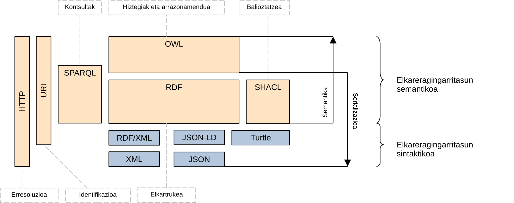
RDF: Resource Description Framework
W3C-ren estandar ofiziala baliabideak web sarean argitaratzeko
Gaur egun bere erabilera hazten ari da enpresa eremuan, datuak Knowledge Graphs (KGs) bidez gordetzeko, datuetan-zentratutako arkitekturak inplementatzeko: adibidez Netflix

RDF tripleak subjektu-predikatu-objektu eredua erabiltzen du, euskarak ez bezala, subjektu-objektu-predikatu egitura duena
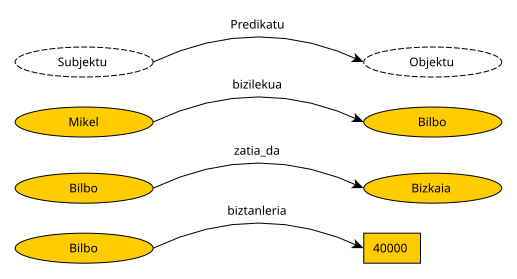
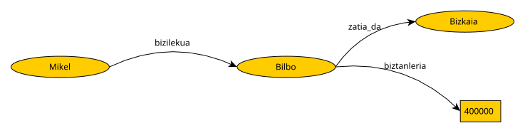
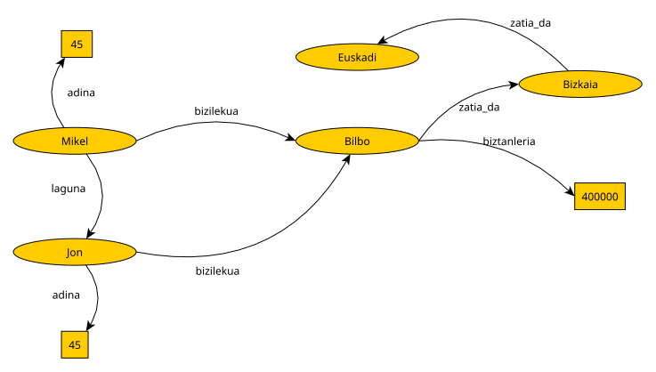


Grafoaren banako guztiak URIen bidez identifikatzen dira
URI: Uniform Resource Identifier (≠ URL!). Baliabideak identifikatzen ditu: http://www.wikidata.org/entity/Q8692
URL: Uniform Resource Locator. Sarean (Baliabide bat deskribatzen duen) dokumentu baten kokapen fisikoa adierazten duen URI-a: https://www.wikidata.org/wiki/Q8692
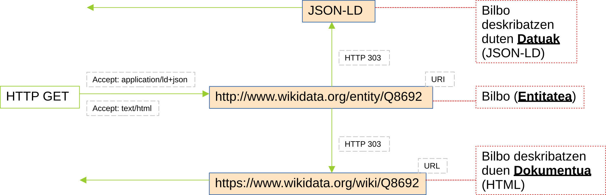
[adibideak/curl_wikidata.sh]
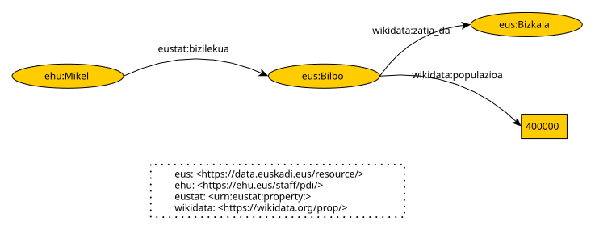
Subjektuak eta predikatuak baliabideak soilik izan daitezke (URIak)
Zenbait objektu balio literalak izan daitezke (Karaktere kateak)
Balio literalek datatype-a izan dezakete (XML Schema Datatypes)
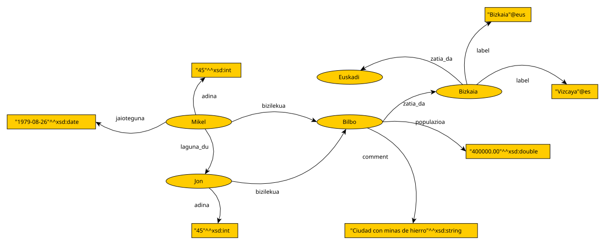
RDF datuak semantika jakin batekin adierazteko eredua da (grafo moduan)
Eredu abstraktu hori sintaxi desberdinen bidez inplementatu daiteke: Fitxategi batean "Serializatu" edo idatzi
Sintaxi horietako bat RDF/XML da
Ez nahastu eredua sintaxiarekin: RDF XML fitxategi bat baino askoz gehiago da!
RDF/XML: http://www.w3.org/TR/rdf-syntax-grammar/
Turtle: http://www.w3.org/TR/turtle/
JSON-LD: https://www.w3.org/TR/json-ld11/
NQuads: https://www.w3.org/TR/n-quads/
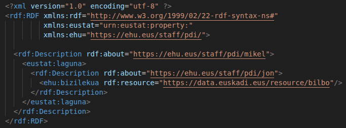
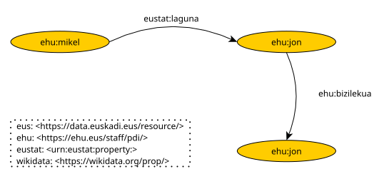
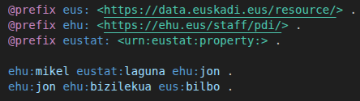
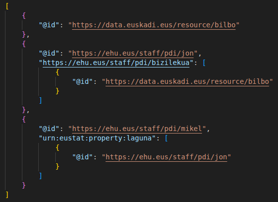
RDF serializazioa JSON baliatuz: web garatzaileentzat erraza
@context-ek JSON key-ak RDF URIetara mapeatzen ditu
Schema.org-ek (Google) web orrietako metadatuetarako erabiltzen du
Google, Bing, Yahoo-k prozesatzen dute bilaketak hobetzeko
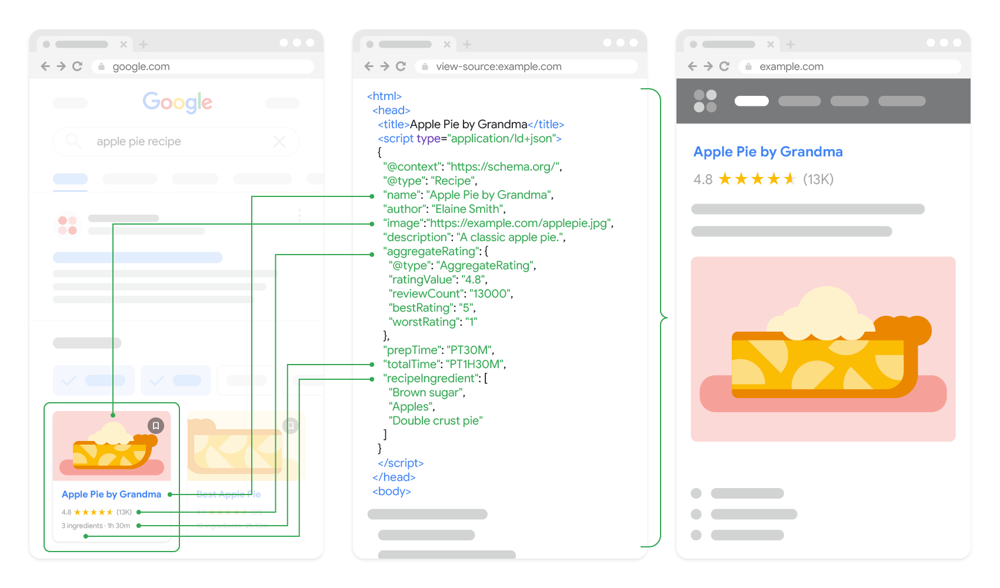
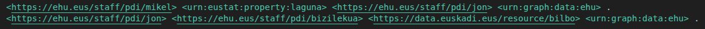
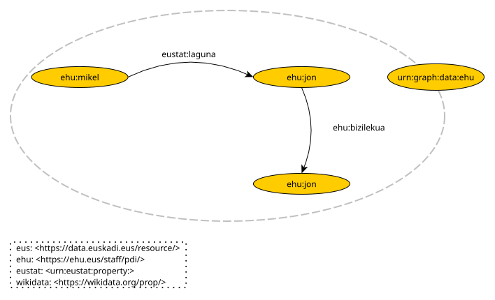
N-Triples-en hedapena Named Graphs-entzat
Lerro bakoitza: <subjektua> <predikatua> <objektua> <grafoa> .
Formatu sinplea hainbat grafo esportatu/inportatzeko
Datu-base handien dump-etan erabilia (DBpedia, Wikidata)
RDF W3C-k definitutako estandarra da (=HTML, !=SQL), RDF fitxategi batetik:
Triple Store-ak internet existitzen zenean sortu ziren (NoSQL!):
Komertzialak: GraphDB, Virtuoso, Stardog, Amazon Neptune, RDFox, AllegroGraph, MarkLogic
Kode irekikoak: Apache Jena, Eclipse RDF4J, Oxigraph, QLever
eGela; Laborategiko gidoiak; NoSQL; Beharrezko softwarea
[adibideak/./graphdb]
[adibideak/jon_bilbo.ttl]
[adibideak/mikel_bilbo.ttl]
Kontuan hartzekoa: fitxategiak (taula) vs grafoak, entitatearen bateragarritasuna URI berdinarekin, baliabideak vs literalak
Tripleak URI batek identifikatutako "poltsa" batean biltzea (datuekiko desberdina): Named Graphs
Inplementazioaren araberakoa: Triple Store guztiek Default Graph bat dute, non triple guztiak biltzen diren
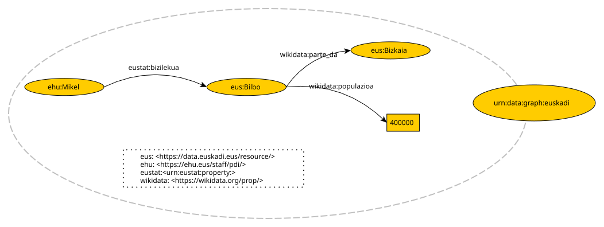
[adibideak/named_graph.nq]
Datuak eta metadatuak hizkuntza berdinean (NoSQL! RDF!)
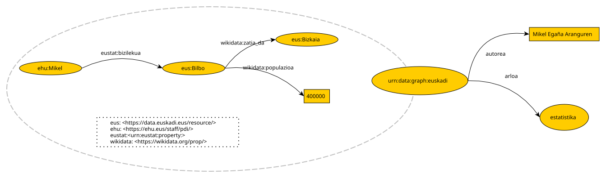
[adibideak/named_graph_metadatuak.nq]
Datuak eta metadatuak hizkuntza berdinean (NoSQL! RDF!)
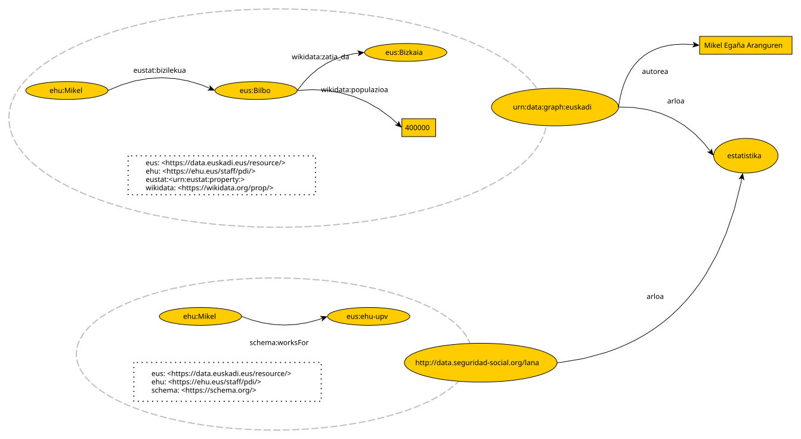
[adibideak/gizarte_segurantza.nq]
Default Graph
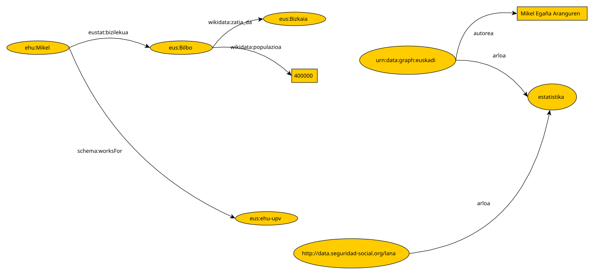
URIrik gabeko nodo anonimoak: identifikatzaile globalik gabeko baliabideak
Baliabidea kanpotik erreferentziatu behar ez dugunean erabiltzen dira (ezin dira kanpoko zerbitzarietako grafoetatik lotu)
Turtle sintaxia: _:b1, _:b2, ... edo []
"Jon" baliabideak ez du URI propiorik
Triple bati buruzko informazioa: Mikel eta Jon 1997tik lagunak dira
RDF triplea: Mikel laguna_da Jon. 1997tik?
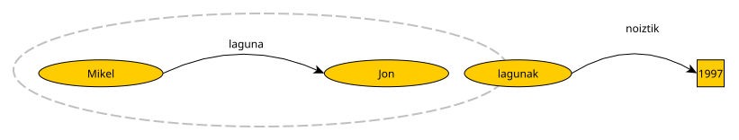
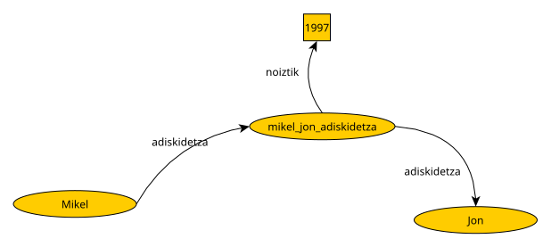
Erreifikazioa sinplifikatzen du: Named Graphs baino intuitiboagoa, tarteko nodoa baino sinpleago
RDFren hedapen berria: tripleak subjektu edo objektu gisa onartzea
Sintaxia: << subjektua predikatua objektua >>
W3C estandarra garapenean
SQLko eragiketa: eguneratzen du existitzen bada, txertatzen du ez bada
INSERT INTO maskotak (id, izena, kolorea)
VALUES (2, "Fluffy", "beltza")
ON DUPLICATE KEY UPDATE kolorea = VALUES(kolorea);
Helburua: errenkada baterako balio eguneratu bakarra mantentzea
Oinarritua: Stratos Kontopoulos (Medium)
Datuak kargatzean, hirukoitza berriak gehitzen dira
Adibidea: ex:kolorea "beltza" gehitzeak ez du ex:kolorea "marroia" ezabatzen
Emaitza: baliabideak hainbat balio izan ditzake propietate berarentzat
RDF ereduak propietate bakoitzeko hainbat balio onartzen ditu baliabide batean
owl:FunctionalProperty-rekin (OWL) ere, murrizketa logikoa da: Triple Store-ak ez du automatikoki ezabatzen
Triple Store-ek onartu, ohartarazi (SHACL) edo inferitu (OWL) dezakete; ez dute automatikoki ezabatzen
RDFn (eta OWLn), datu bat falta izateak ez du esan nahi faltsua edo zaharkitua denik (Informaziorik ez izateak ez du ukapena inplikatzen, informazioa beste nonbaiten edo etorkizunean egon daitekeelako interneten)
Balio bat ordezkatzeko, ezabaketa esplizitua adierazi behar da
Aukerak: SPARQL Update (DELETE/INSERT) edo grafo osoa ordezkatu
rdf:type predikatua - instantziak (RDF) eta klaseak (RDFS)
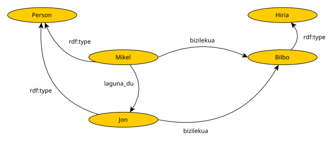
rdfs:Class - klaseak definitu
rdfs:subClassOf - klaseen hierarkiak
rdfs:Property - propietateak definitu
rdfs:subPropertyOf - propietateen hierarkiak
rdfs:domain, rdfs:range - propietateen murrizketak
rdfs:label, rdfs:comment - anotazioak
Hizkuntza bera definitzen dute
RDF: http://www.w3.org/1999/02/22-rdf-syntax-ns# (Adib. rdf:type = http://www.w3.org/1999/02/22-rdf-syntax-ns#type), RDFek definitua (Bere burua definitzen du), RDFSek eta OWLek
RDFS: http://www.w3.org/2000/01/rdf-schema# RDFek, RDFSek (Bere burua definitzen du) eta OWLek definitua
Hizkuntza bera definitzen dute
SHACL: https://www.w3.org/ns/shacl.ttl RDFek, RDFSek eta OWLek definitua
OWL: http://www.w3.org/2002/07/owl# RDFek, RDFSek eta OWLek definitua (Bere burua definitzen du)
Domeinu zehatza deskribatzen dute: geografia, biologia, merkataritza, ...
Argitaratu nahi ditugun datuen propietate orokorrak definitzen dituzte
foaf:person, dbpedia-ont:city, dc:book, schema:person, ...
RDF: datu espezifikoak (Mikel, Jon, Bilbo, ...)
Ontologiak (RDFS, OWL): datu horien propietate orokorrak (Pertsona, Hiria, ...)
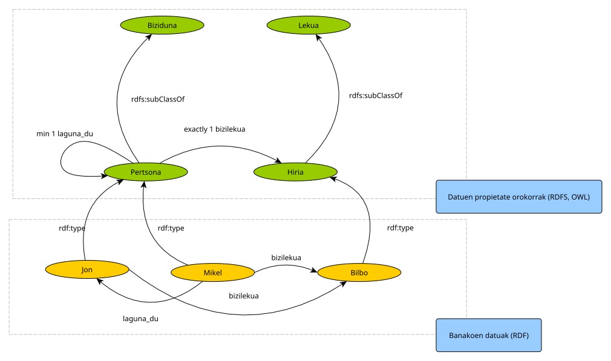
Web sarean datu egituratuak argitaratzea, makinak lotu eta interpreta ditzaten
Web estandarretan oinarritua: URI, HTTP(S), RDF, SPARQL
Tim Berners-Lee-k (Web-aren asmatzaileak) proposatua 2006an
URI batek bezeroaren arabera adierazpen desberdinak itzul ditzake
Web nabigatzailea → HTML (gizakientzat)
RDF bezeroa → RDF/XML, Turtle, JSON-LD (makinentzat)
HTTP Content Negotiation bidez (Accept goiburua)
Baliabidearen URIa: http://www.wikidata.org/entity/Q8692
Web orria (Gizakiak - HTML): https://www.wikidata.org/wiki/Q8692
RDF datuak (Agenteak): [curl_wikidata.sh]
SPARQL endpoint-a (Gizakiak eta agenteak): https://query.wikidata.org/
Baliabidearen URIa: http://dbpedia.org/resource/Bilbao
Web orria (Gizakiak - HTML): https://dbpedia.org/page/Bilbao
RDF datuak (Agenteak): https://dbpedia.org/data/Bilbao
SPARQL endpoint-a (Gizakiak eta agenteak): https://dbpedia.org/sparql

★ Datuak web sarean eskuragarri (edozein formatutan) lizentzia irekiarekin
★★ Datu egituratuak eta makinaz irakurgarriak (adib. Excel irudiaren ordez)
★★★ Formatu ez jabeduna (adib. CSV Excel-en ordez)
★★★★ W3C estandarrak erabili (RDF, SPARQL) baliabideak identifikatzeko
★★★★★ Zure datuak beste datuekin estekatu (testuingurua)

Enpresa Knowledge Graphs-ak: datu heterogeneoen integrazioa
Open Data: gobernuko datu publikoak (adib. datos.gob.es)
Liburutegiak eta artxiboak: estekatutako katalogo bibliografikoak
Zientzia: FAIR datu zientifikoak (Findable, Accessible, Interoperable, Reusable)
Trifid: Linked Data zerbitzari arina
Solid: datu pertsonalen pod deszentralizatuak